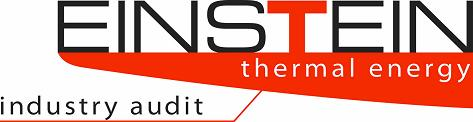

User Manual
On EINSTEIN
Overview
EINSTEIN Developers
Acknowledgements
Release Notes Version 1.0
OVERVIEW
For
optimising thermal energy supply in industry, a holistic integral
approach is
required that includes possibilities of demand reduction by heat
recovery and
process integration, and by an intelligent combination of efficient
heat and
cold supply technologies.
EINSTEIN is
a tool-kit for fast and high quality thermal energy audits in industry,
composed by an audit guide describing the methodology and by a software
tool
that guides the auditor through all the audit steps.
The
main
features of EINSTEIN
are:
(1) the data processing is based on standardised
models for industrial processes and industrial heat supply systems;
(2) special
tools allow for fast consistency checking and estimation of missing
data, so
that already with very few data some first predictions can be made;
(3)
semi-automatization: the software tool gives support to decision making
for the
generation of alternative heat & cold supply proposals, carries out
automatically all the necessary calculations, including dynamic
simulation of
the heat supply system, and creates a standard audit report;
(4) a basic
questionnaire helps for systematic collection of the necessary
information with
the possibility to acquire data by distance.
The
software
tool includes modules for benchmarking, automatic design of heat
exchanger
networks, and design assistants for the heat and cold supply system.
The core of the expert system
software tool is available for free, as an open source software
project. This
type of software development has shown to be very efficient for
dissemination
of knowledge and for the continuous maintenance and improvement by user
contributions.
EINSTEIN DEVELOPERS
EINSTEIN Version 1.0
has been developed by:
Coordination:
Hans
Schweiger (energyXperts.BCN, Barcelona, Spain)
Major contributions to the tool
development from:
Bettina
Slawitsch (Joanneum Research, Graz, Austria)
Christoph Brunner (Joanneum Research, Graz, Austria)
Claudia Vannoni (Universitá di Roma - Sapienza, Rome, Italy)
Enrico Facci (Universitá di Roma - Sapienza, Rome, Italy)
Stoyan
Danov (energyXperts.BCN, Barcelona, Spain)
Thu Huyen (Joanneum Research, Graz, Austria)
Contributions to the databases:
Damjan
Krajnc (University of Maribor, Maribor, Slovenia): benchmark data base.
Stefan Craenen (COGEN Europe, Brussels, Belgium): some data on CHP
equipment
Programming tasks:
Andreas
Hirczy (software developer, Graz, Austria, contracted by Joanneum
Research)
Florian Jöbstl (software developer, Graz, Austria, contracted by
Joanneum Research)
Heiko
Henning (Imsai e-Soft, Berlin, Germany, contracted by energyXperts.BCN)
Tom Sobota
(software developer, Madrid, Spain, contracted by energyXperts.BCN)
Translations:
EINSTEIN
Version 1.0 is available in English and 6 other languages. The
translations have been carried out and co-financed by:
Czech: ENVIROS s.r.o., Prague, Czech Republic
German: Austrian Energy Agency, Vienna, Austria
Italian: CESTEC, Milan, Italy
Polish: KAPE, Warsaw, Poland
Slovenian: Steng - National Cleaner Production Center, Maribor, Slovenia
Spanish: City of Sabadell, Sabadell (Barcelona), Spain
Other contributions:
Thanks furthermore to all partners of the European
project EINSTEIN (www.iee-einstein.org) for their ideas and
suggestions, critical review, testing, the promotion of the software
and the organisation of the training workshops.
ACKNOWLEDGEMENTS
The
EINSTEIN
software tool Version 1.0 has been developed based on a previous
internal tool of energyXperts.BCN, in the
Framework of the European project “EINSTEIN (expert-system
for an intelligent supply of thermal energy
in industry)” with the financial support of the European
Commission, Programme Intelligent Energy Europe (Contract
no: EIE/07/210/S12.466708).
Parts
of this development have furthermore been supported by:
- Generalitat de Catalunya (Spain) Departament
d’Educació i Universitats. Grants Beatriu de Pinòs
No. 2006 BP-B2 0033 and 2007 BP-B2 00012 (energyXperts.BCN).
- Spanish Ministry of Industry, Tourism and Commerce
(MiTyC). Project No. DEX-590000-2008-84 (energyXperts.BCN)
RELEASE
NOTES VERSION 1.0:
EINSTEIN
Version 1.0 has been released in October 2008 as first public version
of EINSTEIN,
mainly for its use within the training courses and the energy audits
realized within the EINSTEIN project, although we are happy if also
people from outside the EINSTEIN consortium start using and testing
this software.
The present version of EINSTEIN is a
version that is still under development within the EINSTEIN project
and, therefore, is NOT yet a
fully tested and reliable version.
Please check all the outcomes
and calculations carried out by the tool before delivering results obtained
with EINSTEIN
to your customers.